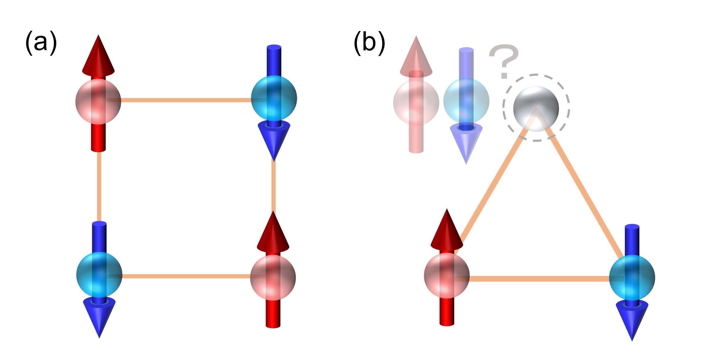
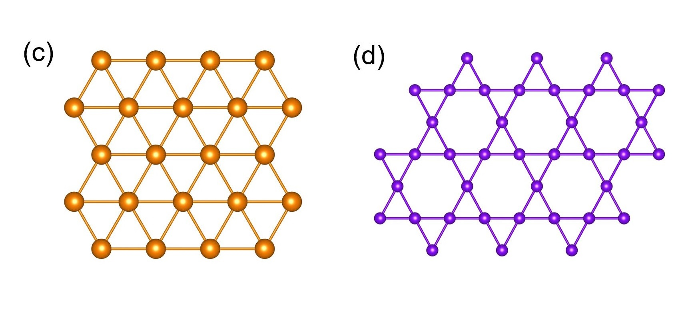

Research
ここでは、私の研究内容や研究の成果について紹介しています。 学部生にとっては、やや高度な内容も含んでいるので、研究のもっと一般的な話もしています。 私の論文リストや発表リスト、今後の発表予定などについては こちらに掲載しています。
研究紹介
もっと一般的な話
「そもそも物理ってなんやねん？」って方、「物理は知っちょんけど物性物理は聞いたことねぇなぁ…」って方、「物理は一通り勉強しちょんけど研究とかわからんし論文とか全然読めんっちゃ…」って方、
色んな人向けに私の研究のもっと一般的な話をしています。なるべく専門的すぎる話や難しい数式は控えてます。
工事中…時間あるときに以下の自分の論文紹介の文章（日本語）考えておきます。
F. Hori, K. Kinjo, S. Kitagawa, K. Ishida, Y. Ohmagari, and T. Onimaru
"Impurity-Robust Bulk Gapless Excitation in the Yb-Based Zigzag Chain Compound YbCuS2"
J. Phys.: Conf. Ser. 2164, 012027 (2022).
F. Hori, K. Kinjo, S. Kitagawa, K. Ishida, Y. Ohmagari, and T. Onimaru
"First-Order Antiferromagnetic Transition and Novel Gapless Excitation in a 4f Zigzag Chain Compound YbCuS2"
arXiv:2201.07563 (2022).
〇「堀は大学で一体、何をしているの？物質のお医者さん？」 ー 物理学に馴染みのない中学生、自分の家族、親戚の伯叔父母、友人向け ー
「まだ大学で勉強してるとか大変なことしてるなぁ。大学で何勉強してんの？」実家の親戚の集まりで頻繁に聞かれます。 また学部時代に塾講師のバイトをしている際、中学校の生徒にも 「先生って大学で何を勉強してるんですか？」 とよく聞かれていました。この質問に対してどこまで答えるべきなのか難しいところではありますが （私のように回答に困っている人はきっと少なくないはず）、 私の場合とりあえず以下のように回答するかなぁ。
簡単に言うと、私は大学で「理科」のお勉強をしています（中学校理科でいうところの理科第1分野）。だから、実験したり計算したりの毎日です。 もっと詳しい話をすると、「物理学」の研究をしています。 フジテレビの人気ドラマに「ガリレオ」シリーズがあると思います。 物理学者・湯川学＝ガリレオ（福山雅治）と刑事・内海薫（柴咲コウ）が 超常現象のような不思議な事件を解決していくという話ですね （2022年9月に「ガリレオ」映画第3弾「沈黙のパレード」が公開されますね！楽しみ！）。 私は、あのカッコいい福山雅治と同じようなことをしています （ただ残念ながら、あれほど容姿端麗、頭脳明晰、スポーツ万能ではないですね）。
さらにもっと詳しい話をすると、「物質」に着目して研究しています。 世の中は多種多様な「物質」でできています。 中学校の理科では、その「物質」が様々な性質を持っていたり、色んな状態になったりすることを学ぶと思います。 電流を通しやすかったり、熱を伝えやすかったり、磁石に引き付けられたり、気体・液体・固体の状態変化をしたり、と。 「世の中の物質の性質とかってもう学者さんたちが調べ尽くして、全部わかってるんじゃね？」と思うかもしれませんが、 実は世の中にはどんな性質を持っているのか、どうしてそのような性質を持つのかまだよくわかってない物質がたくさんあります。 さらにいうと、そもそもまだ見つかってもいない物質もたくさんあります。 そのような物質を調べるのが私の研究内容です。 特に、ちょっと変わった（ちょっとヘンな）現象を示す物質を見つけて、「なんやこいつ！おもろぉ！」（本当は福山雅治声で「実に面白い…」って言いたい）って思いながら研究しています。 物質のちょっとヘンな現象って、人間で例えると「病気」みたいなもんですね。 だから私は、人間の病気を調べるお医者さんみたいに、CT検査みたいなものやMRI検査みたいなものを使って「物質」のどこがヘンなのか、なんでヘンなのかを調べてます。 つまり「物質のお医者さん」ですね！ （狭い部屋に押し込めたり、物質の一部を別のものに変えたりと荒療治をします。 人間のお医者さんと大きな違いは、ちゃんと治療しないところです。「面白そう」と思って逆にもっと悪化させることもあります...ほんまに「お医者さん」と呼んでいいのかな？）
〇「物性物理学とは何ぞや？」
ー 物理は知ってるけど「物性物理学」に馴染みのない高校生や学部生向け ー
私の専門である「物性物理学」は物質の多種多様な性質を物理的な観点から明らかにする分野です。
ただ、この分野はあまり聞き慣れないかもしれません。
恐らく、宇宙物理学や素粒子物理学などに憧れて物理学を勉強したい、研究したいと考えている人の方がが多いんじゃないのかな？
ちなみに、私も高校時代に科学雑誌「Newton（ニュートン）」を読み「相対性理論、面白そう！」「素粒子とかかっけぇ！」「超ひも理論！何それ！」
とか思っていて、大学入学当時はクォーク物理学の研究をしたいと考えていました。
このNewtonという雑誌ではよく相対性理論や宇宙論、素粒子物理学などが大きく取り上げられているので、
それらが物理の研究の全てであるかように誤解していました（そういう人は少なくないはず）。
でも、実は「物性物理学」は素粒子・原子核・宇宙物理学と並ぶ2大分野の1つなんです。
実際、日本物理学会（日本の大きな研究会）では
素粒子・原子核・宇宙物理学の研究者に比べて物性物理学の研究者の方が多いんですよ。
（ちなみに私が「物性物理学」という分野を知り、研究したいと思ったきっかけは、学部1回生の授業での超伝導の浮上デモ実験です。弊研非公式VTuber固体量子ちゃんがデモ実験している動画がありますよ。）
んじゃ「物性物理学」の魅力は何ぞや？ってことで「More is different」の話をしておきましょう
（多くの研究者が物性物理学のイントロで紹介しがちなやつですけど、私のような若輩者が語っていいのでしょうか…？）。
20世紀半ばまでの物理学は、素粒子物理学のような
「複雑な物事でも、それを構成する要素に分解して、それらの個別の要素だけの性質さえ分かれば、
元の複雑な物事も説明できる」とする考え方（要素還元主義）が主流でした。
ところが、物質中には アボガドロ定数（~ 1023個）くらいの膨大な数の原子や電子が集まっているため、電子1つ1つの性質だけでは到底理解できない面白い現象が多々起こります。
（人間の場合、ある集団に所属している1人の性格や行動を理解していたとしても、
集団全体がその人と違う行動をとることとかありますよね。家族、学校、会社、社会全体とか。）
「More is different」という言葉はこの内容を指摘した
1972年のアンダーソン（P.W. Anderson）の論文のタイトルです（アンダーソンは馴染みないかもしれないですが1977年のノーベル物理学賞受賞者ですよ）。「多は異なり」…かっちょいぃ！
我々、物性物理学を研究している者は電磁気学・量子力学・統計力学（これらは大学の学部生で詳しく勉強します）といった物理的な考え方を駆使して、
まさにこの「More is different」の世界を追求している訳ですね。
ただ残念ながら高校物理では、前期量子論や原子核、素粒子とかそういったところは記述があるものの、
そいつらが多数集まったら…といった、この興味深い「More is different」の内容がほとんど記されていないんですよねぇ
（まぁでも熱力学で気体分子運動論などは習いますけどね）。
原子やイオンの結合についての内容は高校「化学」の教科書に記載されている訳で、
物質科学なんてものは「化学」者しか研究しない、と高校の時に妄信させられちゃいますよね、私がそうであったように。
〇ちょっと詳しい話
ー 電磁気学・量子力学・統計力学を履修した学部生向け ー
さぁ、どんどんレベルが上がってきましたよ。ここではちょっと数式使ったり、少し専門用語が出てきたりします。 電磁気学・量子力学・統計力学を履修していたら理解できる磁性物理の面白い話もしています。◆「磁性と超伝導」 ー 相反する2つがいかにして共存するのか？ー
弊研のキャッチコピーってくらいの大事な概念です。弊研のHPに「磁性」「超伝導」の解説が載っているので、ここでは割愛。 超伝導は普通、磁場で壊れるので磁性（特に強磁性）と相性が悪いと思われいたんですけど、近年（といっても2000年）強磁性と共存するような超伝導（強磁性超伝導）も見つかっちゃって注目されていますね。◆「核磁気共鳴」 ー 動的情報と静的情報の両方が観測可能な微視的手法 ー
主に最近、私が使っている実験手法です。通称、NMR。この手法はムズいと思えばムズい、シンプルと思えばシンプル、とりま何だかんだおもろい。（新世紀エヴァンゲリオン的な感じ。北川助教曰く「NMRはエヴァ」。） NMRの紹介も弊研のHPに載っているので、割愛。 PDF版もあるようです。◆「量子スピン系」 ー 古典スピン系と違う？直観に反する結果？ ー
電子は「スピン」という小さい磁石のような自由度を持っているということを量子力学で習いますよね。 物質中で複数の電子が相互作用していると「磁性と超伝導」の箇所で紹介しているようにスピンは周期的に整列しよう（秩序しよう）とします。 だた、相互作用によっては量子力学的な効果が明確に表れて、古典スピン（ただのベクトル）では予想できないような不思議な状態になる場合があります （そのような系を「量子スピン系」と呼んでいます）。 実は非常に簡単な形の相互作用でそのような状態を実感するできます。（量子力学の練習問題みたいな話ですが、結構好きな話です。 こっからの話は田崎晴明さんの「量子スピン系の理論」、宮下精二さんの「量子スピン系」を参考にしています。） それぞれスピン$\boldsymbol{S}_{1}$と$\boldsymbol{S}_{2}$をもつ2つの電子があって、以下のようなハイゼンベルグ型のハミルトニアンを考えてみましょう。 \begin{align} \mathcal{H}=J\boldsymbol{S}_{1} \cdot \boldsymbol{S}_{2} \end{align} ここで相互作用$J<0$ときは､ $\boldsymbol{S}_{1}$と$\boldsymbol{S}_{2}$のスピンが揃ったときエネルギーを得します。強磁性的な相互作用ですね｡ 逆に$J>0$だと $\boldsymbol{S}_{1}$と$\boldsymbol{S}_{2}$が反対向きのときエネルギーを得しますが､これが反強磁性的な相互作用です。 以下このハミルトニアンについて基底状態（一番エネルギーの低い状態、絶対零度で実現される状態）について考察していきましょう｡
【古典スピン系の場合】
$|\boldsymbol{S}_{1}| = |\boldsymbol{S}_{2}| = $ const.を満たすただのベクトルだと思えば、 強磁性の場合（$J<0$）$\boldsymbol{S}_{1}$と$\boldsymbol{S}_{2}$のスピンが揃ってさえすればよいです。2つが揃ったまま､ どこを向いても構わない訳です。 反強磁性の場合（$J>0$）も同様に、$\boldsymbol{S}_{1}$と$\boldsymbol{S}_{2}$が反対向きに揃ってさえすればいい訳ですね（単にスピンが反平行に揃っているネール状態と呼びます）。 古典系は当たり前な感じがして特におもろくないです。
【量子スピン系の場合】
古典系と違って量子系では基底状態において強磁性と反強磁性の間に違いが出てくるんですよねぇ… $S=1/2$の場合を考えてみましょう｡ 復習するとup stateとdown stateをそれぞれ\begin{align} |\uparrow \rangle=\left(\begin{array}{l}1 \\ 0\end{array}\right), \quad |\downarrow \rangle=\left(\begin{array}{l}0 \\ 1\end{array}\right) \end{align}とすれば、 スピンは\begin{align} S^{x}=\frac{1}{2}\left(\begin{array}{ll} 0 & 1 \\ 1 & 0 \end{array}\right), \ \ S^{y}=\frac{1}{2}\left(\begin{array}{cc} 0 & -i \\ i & 0 \end{array}\right),\ \ S^{z}=\frac{1}{2}\left(\begin{array}{cc} 1 & 0 \\ 0 & -1 \end{array}\right) \end{align}と表されて、\begin{align} \left[S^{x}, S^{y}\right]=i S^{z},\ \ \left[S^{y},\ \ S^{z}\right]=i S^{x}, \ \ \left[S^{z}, S^{x}\right]=i S^{y}, \ \ \boldsymbol{S}^{2}=S(S+1) \end{align}のような性質を満たすんでしたよね。ただ、今は $\boldsymbol{S}_{1}$と$\boldsymbol{S}_{2}$の2つのスピンを考えているので2つのスピン状態を表す状態$|\Psi\rangle$を\begin{align} \begin{aligned} |\Psi\rangle &=a_{1}|\uparrow\rangle_{1}|\uparrow\rangle_{2}+a_{2}|\uparrow\rangle_{1}|\downarrow\rangle_{2}+a_{3}|\downarrow\rangle_{1}|\uparrow\rangle_{2}+a_{4}|\downarrow\rangle_{1}|\downarrow\rangle_{2} =\left(\begin{array}{l} a_{1} \\ a_{2} \\ a_{3} \\ a_{4} \end{array}\right) \end{aligned} \end{align}と表すことにします。そうすると式(1)のハミルトニアンは\begin{align} \mathcal{H}=\frac{1}{4}\left(\begin{array}{cccc} J & 0 & 0 & 0 \\ 0 & -J & 2 J & 0 \\ 0 & 2 J & -J & 0 \\ 0 & 0 & 0 & J \end{array}\right) \end{align}と表されます。あとはこいつを対角化すれば、固有値と固有状態がでてくる訳ですね。 ちなみにハミルトニアンをちょい変形すると\begin{align} \mathcal{H}=J \boldsymbol{S}_{1}\cdot \boldsymbol{S}_{1}= \frac{J}{2}\left\{\left(\boldsymbol{S}_{1}+\boldsymbol{S}_{1}\right)^{2}-\frac{3}{2}\right\} \end{align}となるわけだから、式(1)のハミルトニアンの固有状態を求めるのは､合成角運動量$\boldsymbol{S}_{\rm tot} \equiv \boldsymbol{S}_{1}+\boldsymbol{S}_{1}$の固有状態を求めるのと全く同じじゃんってことが解ると思います。 さぁ、基底状態を考えていきましょう。
強磁性-量子系の場合（$J<0$）
\begin{align} \left|\uparrow\rangle_{1}\right| \uparrow\rangle_{2}, \ \quad\left|\downarrow\rangle_{1}\right| \downarrow\rangle_{2}, \ \quad \frac{1}{\sqrt{2}}\left(\left|\uparrow\rangle_{1}\right| \downarrow\rangle_{2}+\left|\downarrow\rangle_{1}\right| \uparrow\rangle_{2}\right) \end{align}の3つの状態（「スピン3重項」と言います）が基底状態です（厳密に言えば、3つ状態の任意の線形結合が基底状態）。これらの状態はスピンが平行に揃っている状態を表しており、$S_{\rm tot} = 1$で基底エネルギーは$J/4$です。 $\left|\uparrow\rangle_{1}\right| \uparrow\rangle_{2}, \ \left|\downarrow\rangle_{1}\right| \downarrow\rangle_{2}$は$z$軸方向に揃った状態（$M = S_{\rm tot}^z = \pm 1$）です。 $M = S_{\rm tot}^z = 0$（スピンが平行に揃っているが全磁化の$z$成分がゼロ）の状態 $\left|\Psi_{x y}\right\rangle \equiv \frac{1}{\sqrt{2}}\left(\left|\uparrow\rangle_{1}\right| \downarrow\rangle_{2}+\left|\downarrow\rangle_{1}\right| \uparrow\rangle_{2}\right)$ は$xy$平面を向いていると考えられますが、ちょっと面白いです。 というのも、$M_x = S_{\rm tot}^x = S_1^x +S_2^x$, $M_y = S_{\rm tot}^y = S_1^y +S_2^y$として期待値を計算してみると\begin{align} \begin{array}{ll} \left\langle\Psi_{x y}\left|M_{x}\right| \Psi_{x y}\right\rangle=0, & \left\langle\Psi_{x y}\left|M_{y}\right| \Psi_{x y}\right\rangle=0 \\ \left\langle\Psi_{x y}\left|M_{x}^{2}\right| \Psi_{x y}\right\rangle=1, & \left\langle\Psi_{x y}\left|M_{y}^{2}\right| \Psi_{x y}\right\rangle=1 \end{array} \end{align}となり, $x$方向, $y$方向どちらの方向の磁化の自乗も1になる。つまり両方の向きに揃った状態（あえて言うと$x$方向に揃った状態と$y$方向に揃った状態の線形結合した状態）な訳かぁ。量子力学って不思議だ。 ただ、量子系でも基底状態は2つのスピンが揃って､ある特定の方向を向いているみたいですねぇ。その点に関しては古典系と同じってことかぁ…
反強磁性-量子系の場合（$J>0$）
反強磁性の場合、基底状態は「スピン1重項」と呼ばれ\begin{align} \left|\Psi_{\mathrm{s}}\right\rangle=\frac{1}{\sqrt{2}}\left(\left|\uparrow\rangle_{1}\right| \downarrow\rangle_{2}-\left|\downarrow\rangle_{1}\right| \uparrow\rangle_{2}\right) \end{align}となり、$S_{\rm tot} = 0$で基底エネルギーは$-3J/4$です。 この状態はスピンが反平行になっている状態に対応してそうです。 そういえば古典系のように単にスピンが反平行に揃っているネール状態\begin{align} |\text{Néel}\rangle = \left|\uparrow\rangle_{1}\right| \downarrow\rangle_{2} \ \text{or} \ \left|\downarrow\rangle_{1}\right| \uparrow\rangle_{2} \end{align}ではなくて、それらの重ね合わせの状態な訳かぁ。しかも、基底エネルギーもネール状態\begin{align} \langle\text{Néel}|\mathcal{H}|\text{Néel}\rangle = -\frac{J}{4} \end{align}に比べて3倍も異なる。この辺が強磁性-量子系のときと違いますね （強磁性-量子系のときは古典系から想像できそうな$\left|\uparrow\rangle_{1}\right| \uparrow\rangle_{2}$や$\left|\downarrow\rangle_{1}\right| \downarrow\rangle_{2}$ が基底状態でしたもんね）。 しかもこいつ「どこにも向いてない」ちょっとおかしな状態です。実際、 $ \left(\boldsymbol{S}_{1}+\boldsymbol{S}_{2}\right)\left|\Psi_{\mathrm{s}}\right\rangle=\boldsymbol{0} $ であり、\begin{align} \left\langle\Psi_{\mathrm{s}}\left|M_{x}^{2}\right| \Psi_{\mathrm{s}}\right\rangle=0, \quad\left\langle\Psi_{\mathrm{s}}\left|M_{y}^{2}\right| \Psi_{\mathrm{s}}\right\rangle=0, \quad\left\langle\Psi_{\mathrm{s}}\left|M_{z}^{2}\right| \Psi_{\mathrm{s}}\right\rangle=0 \end{align}な訳です。 $\alpha$軸回りに$\theta$だけ回転する演算子は$\exp \left(i \theta\left(S_{1}^{\alpha}+S_{2}^{\alpha}\right)\right)$ なので、$\left|\Psi_{\mathrm{s}}\right\rangle$は任意の回転について不変です。どこにも向いていないじゃないか！
このように古典的に揃った状態は量子力学的には必ずしも基底状態ではないんですねぇ。つまり量子系では 古典的に揃った（秩序した）状態より低エネルギー状態が実現して、その古典的に揃った状態が乱されている訳です。これを｢量子ゆらぎ｣と呼んでいます。 ちなみにスピンがたった2つだけで直感に反する現象が起きる訳なので、スピンの数をもっと増やしたら、もっとおもろそうなことが起きそうじゃないですか？ こういった量子スピン系の研究は興味深いですよ。
◆「ボーア-ファン・リューエン（Bohr-van Leeuwen）の定理」 ー 磁性は量子力学が大事？ ー
磁性の教科書とかによく紹介されてるおもろい話です（後輩の藤林君推し）。簡単に言うと、物質の磁性を説明するには量子力学が必要だよ、っていう定理です（ここからの話は、楠瀬博明さんの「スピンと軌道の電子論」を参考にしています）。 電磁場中（電磁ポテンシャル$\phi(\boldsymbol{r}), \ \boldsymbol{A}(\boldsymbol{r})$）の$N$個の電子を考えましょう。ハミルトニアンは\begin{align} {\cal{H}}=\sum_{n=1}^{N}\left[\frac{1}{2 m}\left(\boldsymbol{p}_{n}+\frac{e}{c} \boldsymbol{A}\left(\boldsymbol{r}_{n}\right)\right)^{2}-e \phi\left(\boldsymbol{r}_{n}\right)\right]+V\left(\boldsymbol{r}_{1}, \boldsymbol{r}_{2}, \cdots, \boldsymbol{r}_{N}\right) \end{align}で与えられますね。ここで、$c$は光速度、$e$は電気素量、$m$は電子質量、$V\left(\boldsymbol{r}_{1}, \boldsymbol{r}_{2}, \cdots, \boldsymbol{r}_{N}\right)$は電子間相互作用です。 古典統計力学では、このHamiltonianに対する温度$T$の分配関数$Z$は$\beta = 1/k_{\rm B}T$（$k_{\rm B}$はボルツマン定数）として\begin{align} Z=\prod_{n=1}^{N} \int \frac{d \boldsymbol{r}_{n} d \boldsymbol{p}_{n}}{(2 \pi \hbar)^{3}} e^{-\beta {\cal{H}}} \end{align}のように求められます（ちゃんと統計力学を復習してね）。ちなみに、$\boldsymbol{\pi}_{n}=\boldsymbol{p}_{n}+(e / c) \boldsymbol{A}\left(\boldsymbol{r}_{n}\right)$ と座標変換すると\begin{align} \begin{aligned} &Z=\prod_{n=1}^{N} \int \frac{d \boldsymbol{r}_{n} d \boldsymbol{\pi}_{n}}{(2 \pi \hbar)^{3}} e^{-\beta {\cal{H}}^{\prime}} \\ &{\cal{H}}^{\prime}=\sum_{n=1}^{N}\left[\frac{\boldsymbol{\pi}_{n}^{2}}{2 m}-e \phi\left(\boldsymbol{r}_{n}\right)\right]+V\left(\boldsymbol{r}_{1}, \boldsymbol{r}_{2}, \cdots, \boldsymbol{r}_{N}\right) \end{aligned} \end{align}となります。おいっちゃ…よく考えたらこいつって$\boldsymbol{A} = 0$（つまり磁場$\boldsymbol{B}$がゼロ）の分配関数\begin{align} \begin{aligned} &Z(\boldsymbol{A} = 0)=\prod_{n=1}^{N} \int \frac{d \boldsymbol{r}_{n} d \boldsymbol{p}_{n}}{(2 \pi \hbar)^{3}} e^{-\beta {\cal{H} (\boldsymbol{A} = 0)}} \\ &{\cal{H}}(\boldsymbol{A} = 0)=\sum_{n=1}^{N}\left[\frac{\boldsymbol{p}_{n}^{2}}{2 m}-e \phi\left(\boldsymbol{r}_{n}\right)\right]+V\left(\boldsymbol{r}_{1}, \boldsymbol{r}_{2}, \cdots, \boldsymbol{r}_{N}\right) \end{aligned} \end{align}の計算結果と同じになるはずじゃん（$\boldsymbol{p}_n$と$\boldsymbol{\pi}_n$を入れ替えるだけなので）。てことは、$Z$は$\boldsymbol{A}$によらない、つまり磁場$\boldsymbol{B}$によらない訳ね。待ってっちゃ…そしたら この系の磁化（磁気モーメント）の統計平均$\left\langle\boldsymbol{\mu}\right\rangle$って… \begin{align} \left\langle\boldsymbol{\mu}\right\rangle=-\frac{1}{N} \frac{\partial F}{\partial \boldsymbol{B}}=\boldsymbol{0} \end{align} おっと、ゼロになっちゃってます（ここで、$F \equiv - \beta^{-1} \ln Z $はHelmholtzの自由エネルギーです）。 これだと電磁場下における電子の系が熱平衡状態だと磁化は常にゼロ、磁性を全く示さないってことになっちゃいます。 古典統計力学の範囲では磁性は全く説明できない、ってことですね。この事実を「ボーア-ファン・リューエン（Bohr-van Leeuwen）の定理」と言います。 この事実は、電磁場下（電場$\boldsymbol{E}$）におけるローレンツ力$\boldsymbol{F}=e\left(\boldsymbol{E}+\dot{\boldsymbol{r}} \times \boldsymbol{B}\right)$の仕事率が $\dot{\boldsymbol{r}} \cdot \boldsymbol{F} = e \dot{\boldsymbol{r}} \cdot \boldsymbol{E}$となって、磁場$\boldsymbol{B}$を含まないことに起因しているようです。 古典統計力学と違って量子統計力学では「スピンが存在する」「座標$\boldsymbol{r}$と運動量$\boldsymbol{p}$は非可換であり、分配関数において座標と運動量の和は独立に扱えない」 「電子系の状態はシュレーディンガー方程式で決定され、エネルギー準位は離散的になる」「電子はフェルミ粒子なのでパウリの排他律に従う」 ために磁性を適切に取り扱うことができるみたいです。ほぇ…量子力学って大事だね！
◆「磁気フラストレーション」 ー スピンも欲求不満な状態になる？ ー
さぁ、やっと私の最近のメインな研究トピックです。「フラストレーション」って言葉は、欲求が何らかの障害によって阻止され、満足されない状態のことを意味しますよね。 コロナ禍の緊急事態宣言では、満足てきていた人もいれば、フラストレーションが溜まっていた人もいると思います。みんなが満足できる対策ってなかなか難しいですよね… それと同じように、 物質中の電子スピンも、みんなが同時に満足できないような（フラストレートした）状態が生じる場合があります。ここでいう「満足できない」、というのは 「相互作用のエネルギーを最も得する配置を選べることができない」という意味です。なんのこっちゃ？ってなると思うので簡単な例を出して紹介します。
図のようにスピン間に反強磁性的な交換相互作用\begin{align} \mathcal{H}=J \sum_{\langle i, j\rangle} \sigma^{z}_{i} \sigma^{z}_{j} \end{align}がはたらく2つのイジングモデル(a), (b)を考えます（$\sigma^{z} = 2S^{z}$, $J>0$）。(a) のようにスピンが四角形の格子点に位置してる場合、全ての隣り合うスピンが反平行 ($\uparrow$,$\downarrow$)に揃った構造をとることができますね。一方で、(b)のようにスピンが三角形の格子点に位置してる場合は、 2つのスピンを反平行に置くと残りのスピンはどの方向を向いてもエネルギーが変わらないので、安定な配置が決まりません。 このように，幾何学的配置や相互作用の競合によって、すべての相互作用エネルギーを最低にすることができない状況を物理学では「フラストレーション」といいます。 フラストレーションをもつ量子スピン系（フラストレート系）の例としてとしては、三角格子やカゴメ（籠目状に並んでるやつ、ちなみに英語でもkagomé）格子が有名です（特に格子の幾何学的な構造に起因する場合は「幾何学的フラストレーション」とも呼ばれています）。 フラストレート系では磁気秩序（周期的なスピンの配列）が抑制されて、通常の磁性体で実現しないような面白い現象（例えば量子スピン液体など）を示す場合があるので、現在もなお実験理論問わず盛んに研究が行われています。 Fig. : (a), (b) Antiferromagnetic Ising model. (c) Triangular lattice. (d) Kagomé lattice.
図: (a), (b) 反強磁性イジングモデル. (c) 三角格子. (d)カゴメ格子.